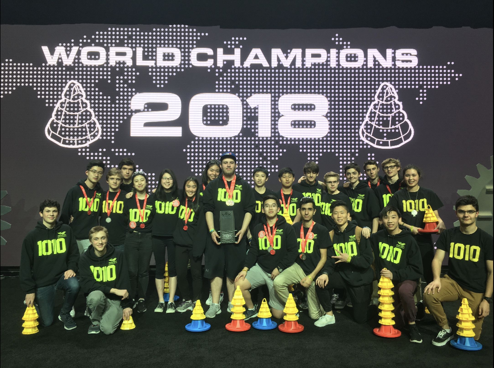

Robot Learning
During my 3 years of Vex Robotics Competition, I had worked on diverse aspects of building and designing robots to handle complex tasks and optimizing the process. These were human controlled robots, and they depended on human drivers to make complex decisions and plans under quickly changing environments of the games.
Now, I am interested in humanoid robot learning, looking forward to real-world deployable humanoids that can maneuver through the real-world environments to solve given tasks. Currently my particular interest lies in humanoid loco-manipulation that is natural and efficient, while not being limited to single or few task settings. I am working on motion prior pre-training stage with rl to train robust and generalizable hierarchical policy.
Reinforcement Learning
Looking ahead, I personally favor reinforcement learning approaches over the other imitation learning or tracking approaches. I am interested in how humans, ever since we are born, experience and maneuver through the world environments to collect data and enhance all traits / capabilities we own as human beings. With very precise sensory undertanding (hardware) and experiences with world interaction (data), each human being continues to learn / reinforce. I like finding motivations from how humans learn starting from babies, to find ideas on how robot learning can be enhanced via reinforcement learning.
I am currently working on solving complex-locomanipulation tasks with generalization via goal-conditioned reinforcement learning and motion priors for motion / skill composition.
RLLAB
I am working as a research intern at RLLAB @ Yonsei, advised by prof. Youngwoon Lee.
I am working on humanoid loco-manipulation with motion priors pre-training and hierarchical compositional goal-conditioned reinforcement learning.
MIRLAB
I did a short-time intership at MIRLAB @Yonsei (previously) advised by prof. Youngjae Yu.
I participated in LLM benchmark on assesing LLM's capability to identify errors in scientific papers. I took a part in data-processing and preparing dataset of the list of papers and identified errors.
Vex Robotics Competition
I was a part of Vex Robotics program in West Vancouver Secondary School for 3 years util highscool graduation. I took a role of a team Lead for team 1010B which consisted of 6 people, each working on designing, engineering, building, programming, managing, and driving the robots. As a team lead, I took major parts in every aspect, aiming for top teams in the world.
During regional tournaments season throughout the year,we participated in every tournament to test new builds and approaches against other teams, and continued to make improvements in every aspect possible. We qualified for the Provincials early in every season, working towards it. After much effort, we came first in the Provincials and got qualified to the World Championship held yearly in Kentucky at the end of the season.
Preparing for the World Championship, each member dedicated their whole time as well during final weeks. Ready for final competition, we had come a long journey and placed pretty high out of 600 teams qualified to Worlds. This experience was absolutely precious, and I could learn a lot from everything and the process we put ourselves through to solve problems and push towards higher goals.


